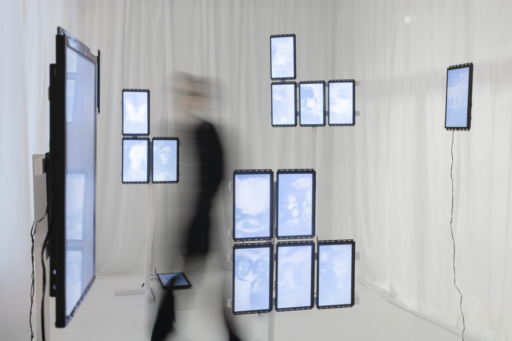
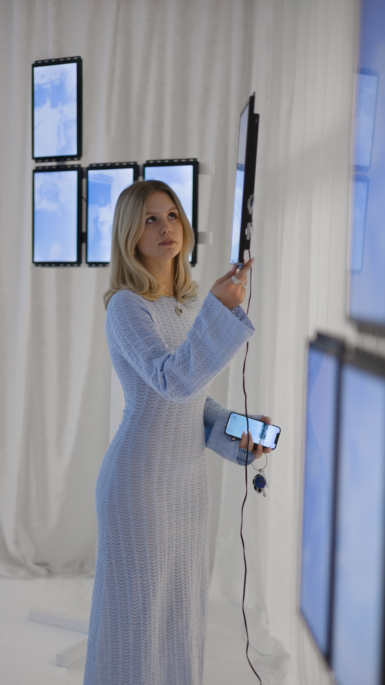
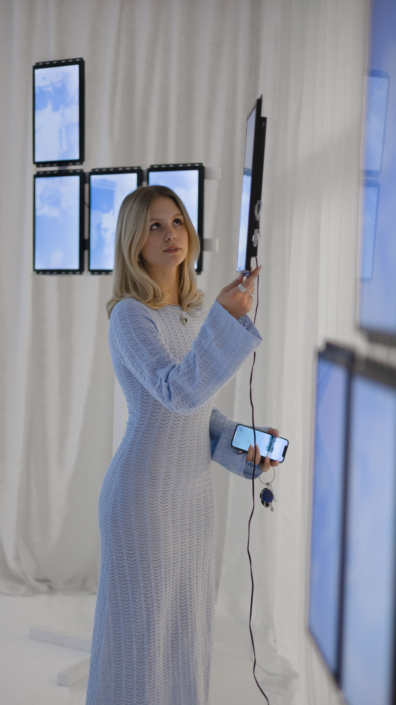
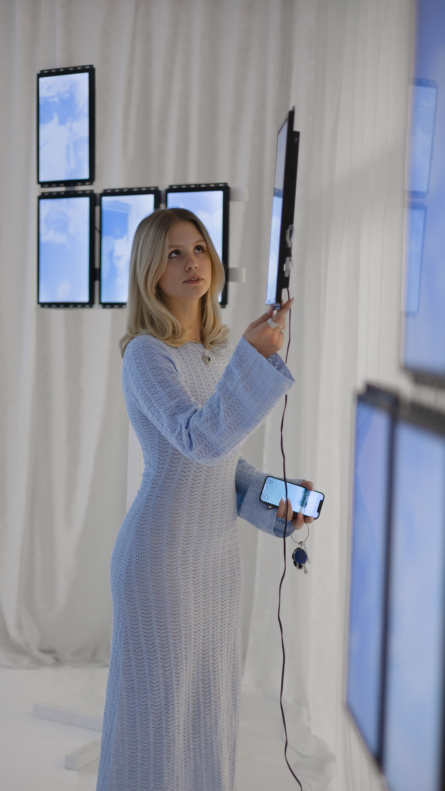
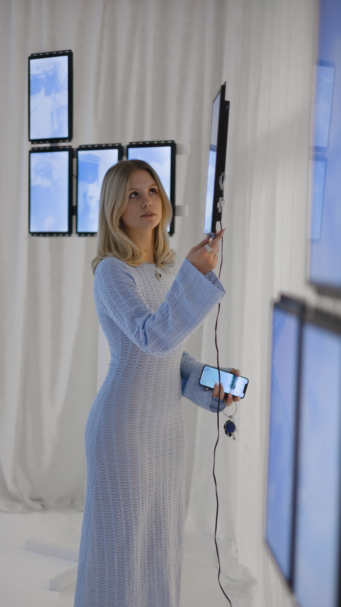

 



For my graduation project at Beckmans College of Designt, I created a spacial video work made up of 27 screens showing fragments from TikTok.
The work explores how the chaotic, emotional style known as Corecore reflects Gen Z’s experience of constant scrolling, media overload, and mixed emotions about the future. By turning the digital feed into a physical space, the project invites visitors to step into a feeling many recognize but rarely put into words; a kind of quiet chaos that feels strangely real.
The sound and videos are sourced from TikTok and reworked in TouchDesigner.